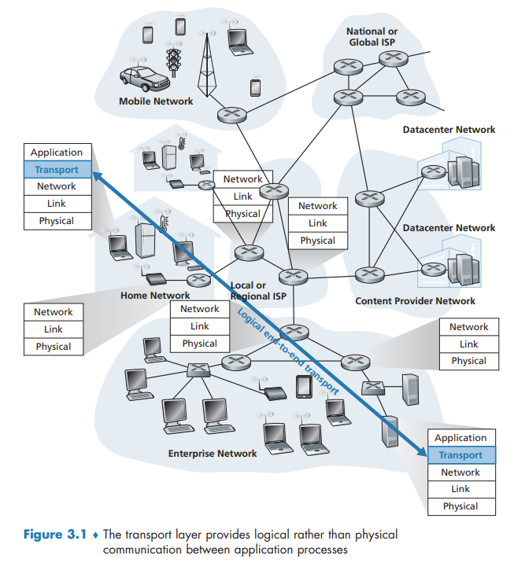

Introduction to the Transport Layer and Transport Layer Services
Introduction to the Transport Layer and Transport Layer Services
A transport-layer protocol provides for logical communication between application processes running on different hosts. By logical communication, we mean that from an application’s perspective, it is as if the hosts running the processes were directly connected.
Terminology: Transport-layer segments
Relationship Between Transport and Network Layers

Overview of the Transport Layer in the Internet
UDP (User Datagram Protocol), which provides an unreliable, connectionless service to the invoking application.
TCP (Transmission Control Protocol), which provides a reliable, connection-oriented service to the invoking application.
The IP service model is a best-effort delivery service. This means that IP makes its “best effort†to deliver segments between communicating hosts, but it makes no guarantees. In particular, it does not guarantee segment delivery, it does not guarantee orderly delivery of segments, and it does not guarantee the integrity of the data in the segments. For these reasons, IP is said to be an unreliable service.
Extending host-to-host delivery to process-to-process delivery is called transport-layer multiplexing and demultiplexing.
TCP also provides congestion control.